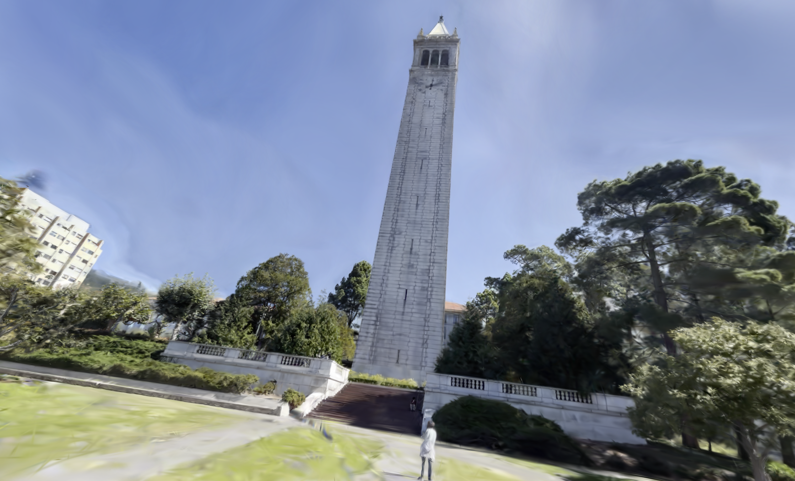
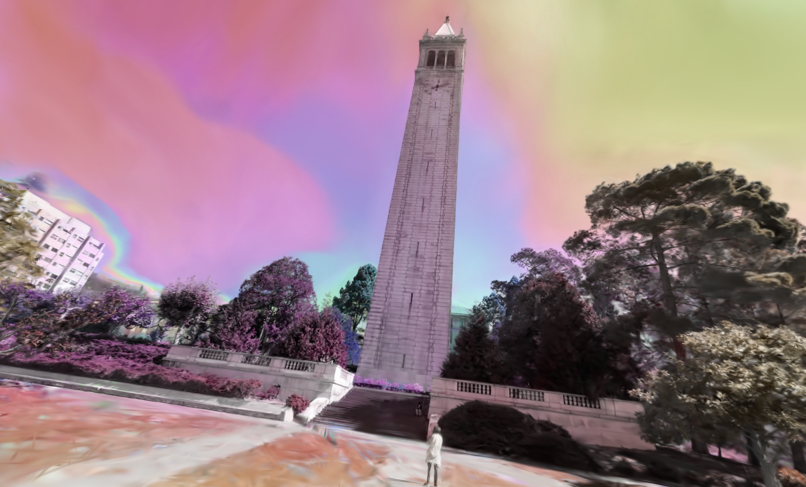
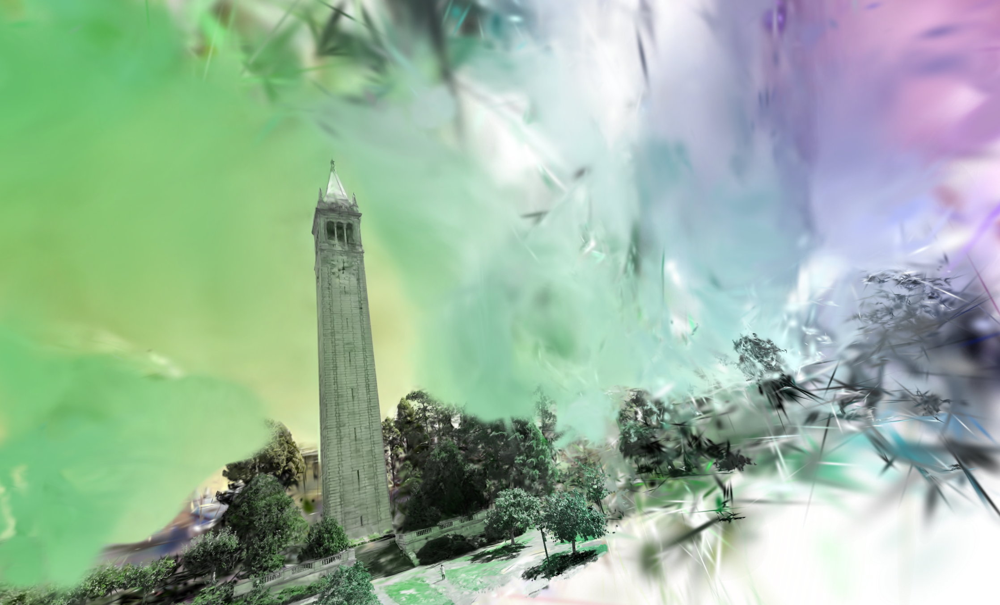
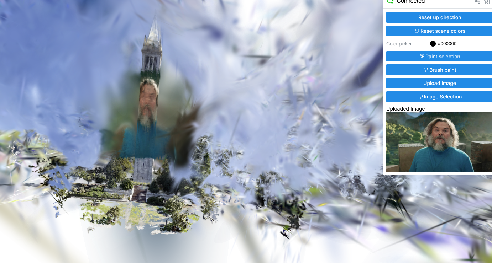
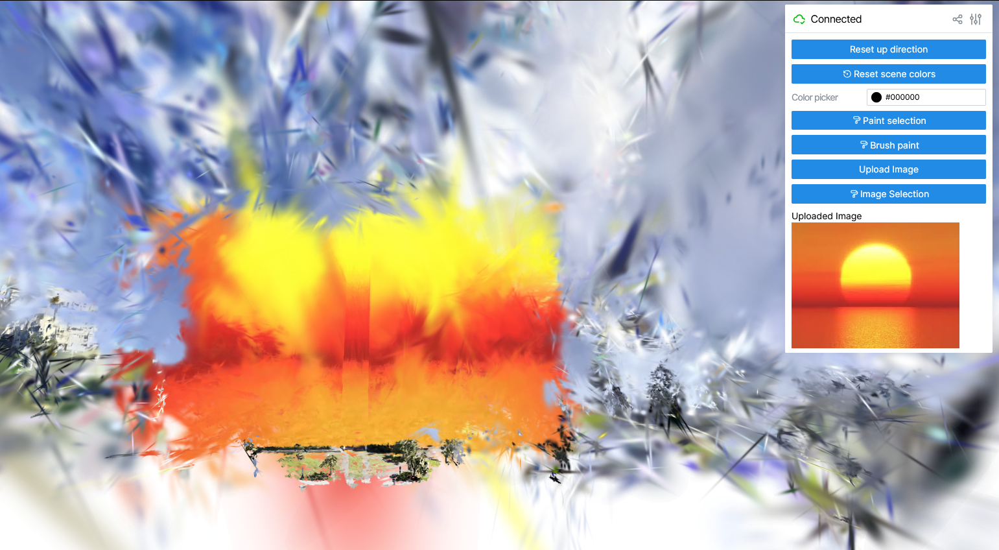
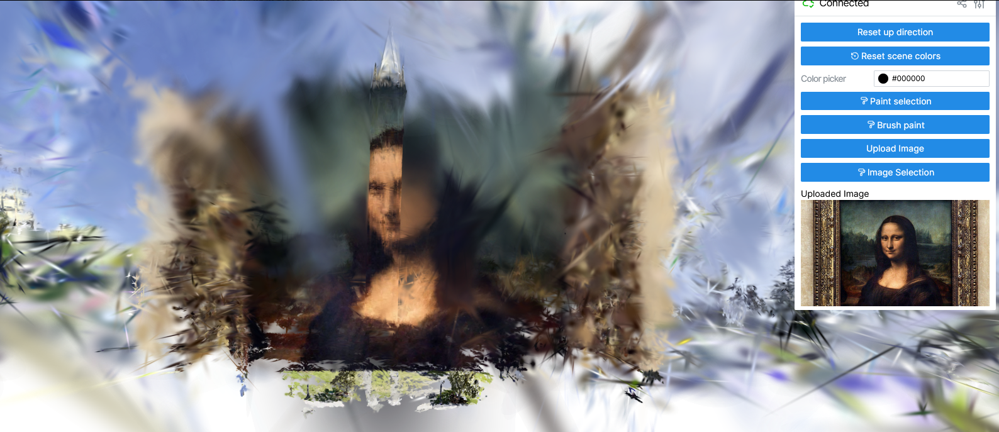
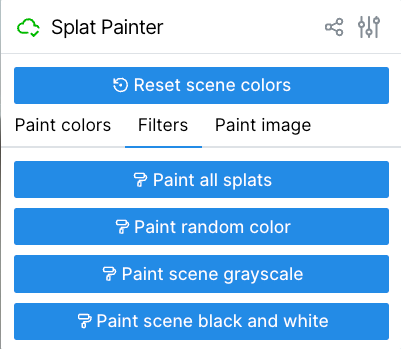
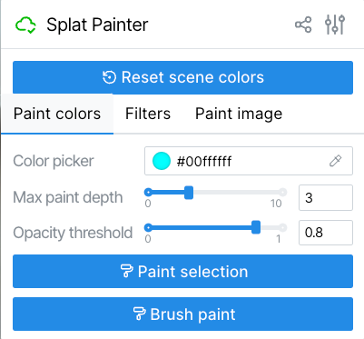
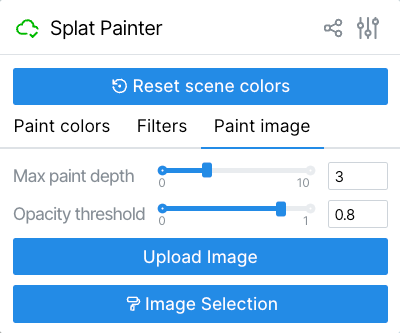

Splat Painter Final Report
Abstract
Splat Painter is an interactive Gaussian splat painting system that enhances real-time 3D visualization. By extending Viser, Nerfstudio's web-based visualizer, our project introduces intuitive selection tools for modifying splat colors dynamically. The brush tool enables freeform stroke-based selection using distance filtering, while the image selection tool allows pixel-based color transfer from uploaded images onto 3D point clouds.
To ensure accurate selection, Gaussian splats are projected into 2D screen space when a user draws a selection brush stroke. The system then masks only the splats within the defined area, filtering out those outside the bounds before applying pixel color mapping. Overcoming challenges such as debugging dependencies, defining new events in React without breaking the code, attempting to optimize rendering logic, and refining projection and distance calculations, we managed to develop a modular, efficient system that balances frontend interactivity with backend computational geometry.
The final implementation showcases creative color transformations, interactive selection methods, and responsive painting tools, demonstrating an innovative approach to Gaussian splat visualization.
Technical Approach
Brush Tool Implementation
For freeform painting, we implemented a polyline-based distance selection algorithm. The system first collects screen-space coordinates as a user draws a brush stroke. We modified the backend to project all the 3D Gaussian centers into normalized camera space and call our custom point-to-polyline distance function, which determines whether each splat falls within the user's brush stroke radius. This allows smooth, continuous selection, mimicking natural painting strokes rather than restricting users to rigid box selection.
Image Mapping
For image-driven coloring, we utilized Pillow (PIL) and NumPy to process uploaded images as RGB arrays. When a user draws a selection brush stroke, Gaussian centers within it are projected into screen space, mapped to normalized coordinates, and scaled relative to the reference image dimensions. The system then masks out splats that fall outside the selection area, ensuring that only points within the brush stroke are modified. Using pixel indexing, the correct RGB values are extracted and assigned to selected splats, effectively transferring colors from 2D images onto 3D point clouds.
Color Enhancements
As for enhancements, we explored HSV-based adjustments, random color applications, and interactive visualization techniques.
Challenges and Lessons Learned
Setup Challenges
Establishing the correct environment was surprisingly the most difficult challenge, as dependencies for Viser and Nerfstudio were inconsistent. A bug in the development install of Viser caused Gaussian splat scenes to render as empty outputs—Patrick reported this issue to a Nerfstudio contributor, leading to a same-day fix. Jordan and Lionel faced additional WSL compatibility issues, requiring deep debugging of OS-related constraints before achieving a stable setup.
Technical Challenges
Modifying Gaussian color properties was unclear due to the structure of the SplatFile class. We resolved this by iterating through RGB arrays stored in the scene data, successfully applying dynamic color updates. Our next biggest challenge was defining a brush stroke event and mapping brush strokes onto splats. This required us to find tutorials and refer to the starter code on how to define events in React and brainstorm a distance function to ensure accurate but smooth transitions. Using polyline filtering, instead of a simple bounding-box method, helped achieve a more fluid interaction.
Key Lessons
Working on this project has been a mix of challenges, breakthroughs, and moments where we thought, "Why isn't this working?" but then found a way through with the help of online resources. The first lesson we learned is that it is difficult for everyone to run the same code when we all have different operating systems. It took us a good 3-4 hours for each of us to finally get the codebase to work so we can start modifying the code.
Another lesson we learned was that it is tricky to bridge user interactions in 2D into meaningful modifications in 3D space, ensuring brush strokes, image mapping, projection methods, and distance calculations felt intuitive and accurate. We had to first scan through all the files, determine which functions needed to be modified, and get our code to work with the starter code without rewriting any important logic or breaking the codebase entirely.
A small lesson we also learned was that it is useful to have multiple branches to prevent merge conflicts that could break the code and take too long to fix. Ultimately, we learned the value of collaborative problem-solving and building a system that's modular enough to keep evolving. It was a good experience of what it's like working with a team of software engineers!
Results
|

|

|

|

|

|

|
|

|

|

|
|

|
Video Demonstration
References
- Creating a brush tool: https://www.youtube.com/watch?v=EpWTfLMfF6Y
- Viser Studio API: https://viser.studio/main/scene_api/
- Where to start with 3D Gaussian Splatting: https://youtu.be/9p_i9nKZA4Q
Contributions
| Patrick | Debugging Viser, initial setup, reporting issues to Nerfstudio, and adding additional UI features |
| Lionel | Initial setup, implementing brush stroke and image mapping |
| Jordan and Eric | Wrote the report and developed the presentation slides |
| Team-wide | Developing painting interactions, color transformations, and user interface optimizations |